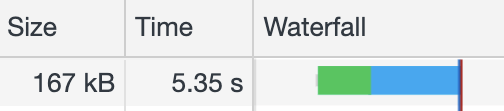

Own your
Build Step
—own your code
Lukas Taegert-Atkinson

Why don't we run JavaScript like a scripting language any more?
Exhibit A
A web application (slow network)
loaded: 18.29s

bundle code
(no minification)
loaded: 7.48s

Exhibit B
A node server
Mock & replace files
Patch up files
Module life-cycle
Image showing how it works